Art direction
I guided the visual direction and gave feedback on the team’s environment artwork. I also designed feature placement and a progression flow in which activating a trigger grants a key to reach the next map.
2D Action-Adventure RPG / Platformer
A soulslike 2D action RPG built around fire, frost, and reading enemy patterns.
Ambidexter is a team project inspired by Elden Ring and Blasphemous, following a fighter who uses fire and frost to protect a world threatened by the misuse of nature’s power. Development ended in December 2024 with the game unfinished. This page focuses on my character animation and VFX work.
As Lead Artist, I helped shape the visual direction and created the main character’s movement, attacks, and effects as pixel-animation sprite sheets in Aseprite. I focused on fluid motion and a strong sense of weight and energy.
Personal ownership, shared work, and supporting evidence.
I guided the visual direction and gave feedback on the team’s environment artwork. I also designed feature placement and a progression flow in which activating a trigger grants a key to reach the next map.
I created the main character’s basic movements, attack animations, and elemental effects in Aseprite.
I helped design movement and combat, organized asset tasks and priorities, and worked with another designer on sound effects and music.
The systems, decisions, and feedback that shape the player experience.
One press delivers an ice strike. A second adds fire and ice; a third releases a large flame attack. Keep pressing to continue the combo, or stop after the first or second stage to keep the attack short. I designed this so players could use short attacks while reading the enemy, then commit to the powerful third stage when a larger opening appears.
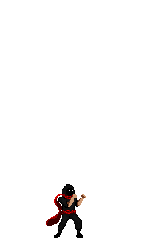
I animated the character and elemental effects together to give each skill a powerful, dynamic finish.
Original sprite sheets. Expand a group and scroll sideways to follow the frames.
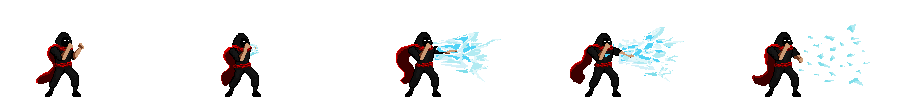
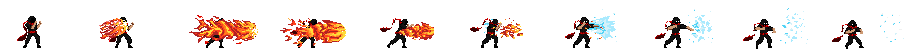
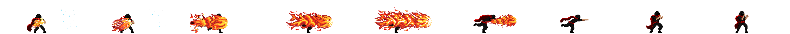
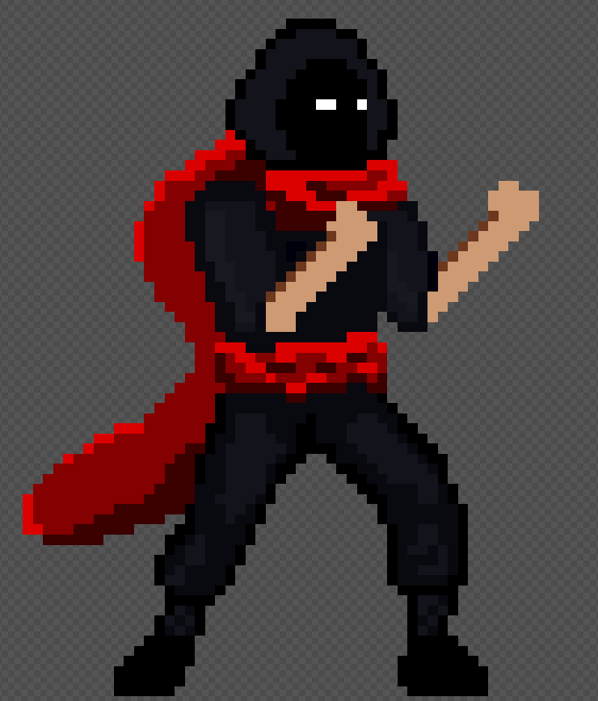
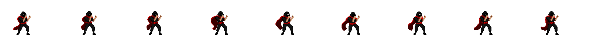
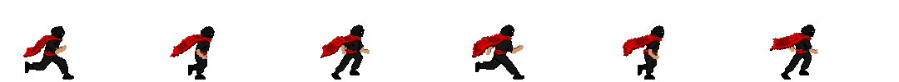
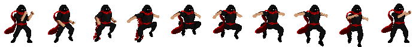
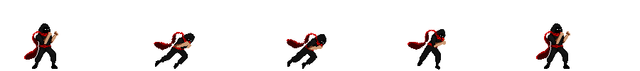
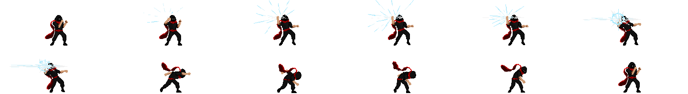

Gameplay and production evidence, with captions and contributor credits where relevant.
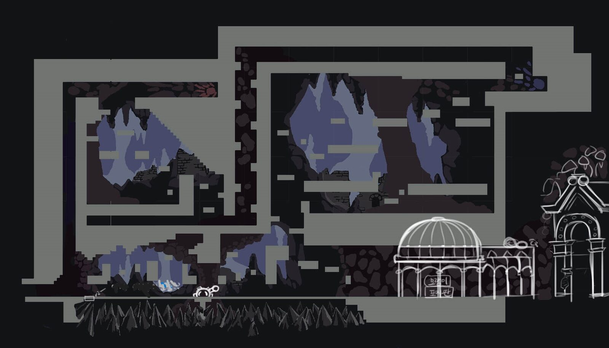
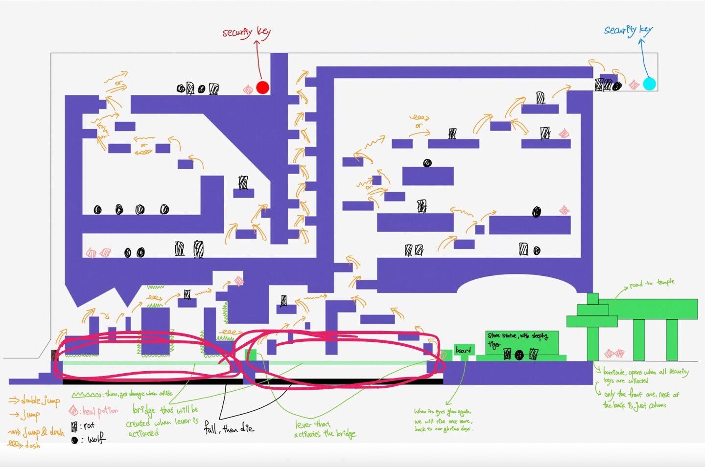
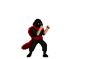
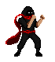
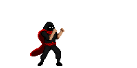
My first round ice effect looked like a white orb. Breaking it into scattered shards after impact gave it the hard, cold quality I was looking for.
This was my first time creating pixel animation. I put the most work into the three-stage attack and its VFX. Looking back, I would simplify basic-attack effects so the larger skills stand out more.